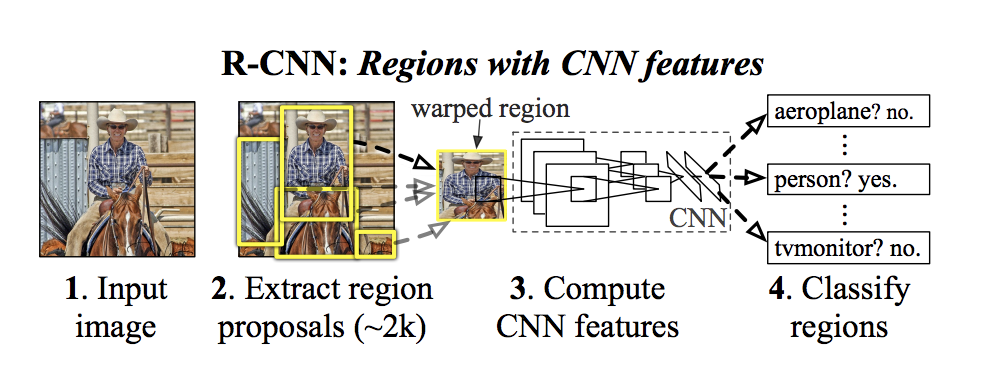
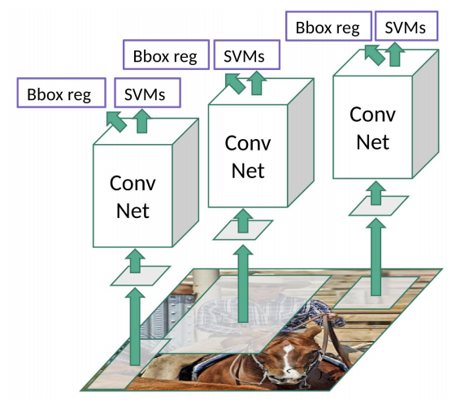

Selective Search
- Generate initial sub-segmentation, we generate many candidate regions
- Use greedy algorithm to recursively combine similar regions into larger ones
- Use the generated regions to produce the final candidate region proposals
Network Architecture

- At first, it uses selective search to generate about 2000 region proposals
- Region proposals are warped into a square and fed into a convolutional neural network that produces a 4096-dimensional feature vector as output.
- The CNN acts as a feature extractor and the output dense layer consists of the features extracted from the image and the extracted features are fed into an SVM to classify the presence of the object within that candidate region proposal.
- In addition to predicting the presence of an object within the region proposals, the algorithm also predicts four values which are offset values to increase the precision of the bounding box.

Problems with R-CNN
- It still takes a huge amount of time to train the network as you would have to classify 2000 region proposals per image.
- It cannot be implemented real time as it takes around 47 seconds for each test image.
- The selective search algorithm is a fixed algorithm. Therefore, no learning is happening at that stage. This could lead to the generation of bad candidate region proposals.